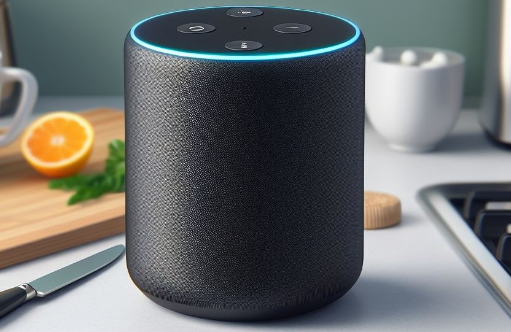

Uw slimme keukengenoot
Uw slimme keukengenoot
In onze hectische levensstijl wordt het vaak een uitdaging om
gezonde maaltijden te plannen en te bereiden. Het "Slimme
Receptenplatform" biedt een innovatieve oplossing om koken
moeiteloos en plezierig te maken, met behulp van geavanceerde
technologieën.
Slimme Keukenassistentie
Dit project introduceert een slimme keukenassistent die gebruikmaakt van kunstmatige intelligentie (AI) en spraakherkenningstechnologie om kookinstructies te vereenvoudigen. Gebruikers kunnen eenvoudig recepten vinden, ingrediënten omzetten en kooktijden aanpassen met slechts hun stem.
- Personalisatie op Maat: Het platform analyseert de culinaire voorkeuren van gebruikers en stelt op maat gemaakte receptsuggesties voor. Of je nu een veganist, een liefhebber van de mediterrane keuken bent of specifieke dieetbeperkingen hebt, de slimme keukenassistent past zich aan jouw voorkeuren aan.
- Automatische Boodschappenlijst: Bespaar tijd en moeite door de automatische integratie van het boodschappenlijstje in de app. Zodra je een recept selecteert, worden de benodigde ingrediënten toegevoegd aan je boodschappenlijst, die je kunt delen of direct online kunt bestellen.
- Keukenapparatuur Connectiviteit: Het platform kan verbinding maken met slimme keukenapparatuur, zoals slimme ovens en kookplaten. Hierdoor kan de assistent de kookinstellingen aanpassen op basis van het recept, waardoor het kookproces nog intuïtiever wordt.
- Kookcommunity en Delen van Ervaringen: Bouw een gemeenschap op rond koken door gebruikers de mogelijkheid te bieden om recepten te delen, kooktips uit te wisselen en culinaire ervaringen te bespreken. Het platform kan ook suggesties geven voor recepten op basis van wat andere gebruikers met vergelijkbare smaakvoorkeuren hebben genoten.
- Gezondheidsbewuste Functies: Implementeer functies waarmee gebruikers voedingsinformatie kunnen volgen, zoals calorieën en voedingswaarden. De slimme keukenassistent kan ook gezonde alternatieven voorstellen en voedingsadvies geven op basis van individuele doelen.